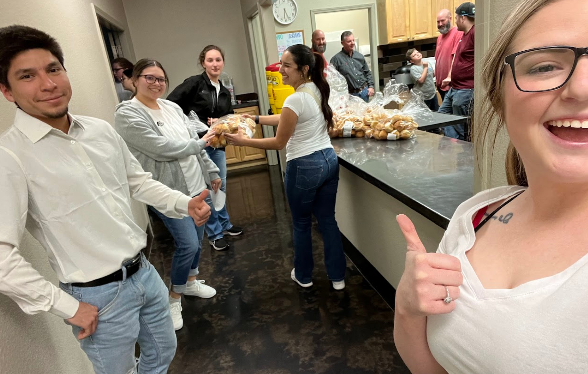
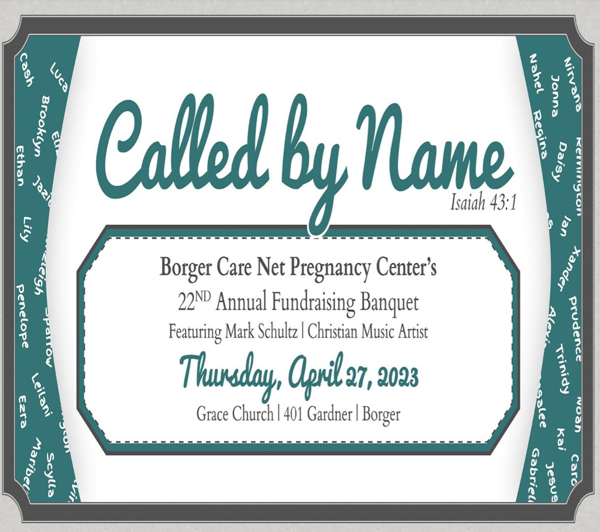
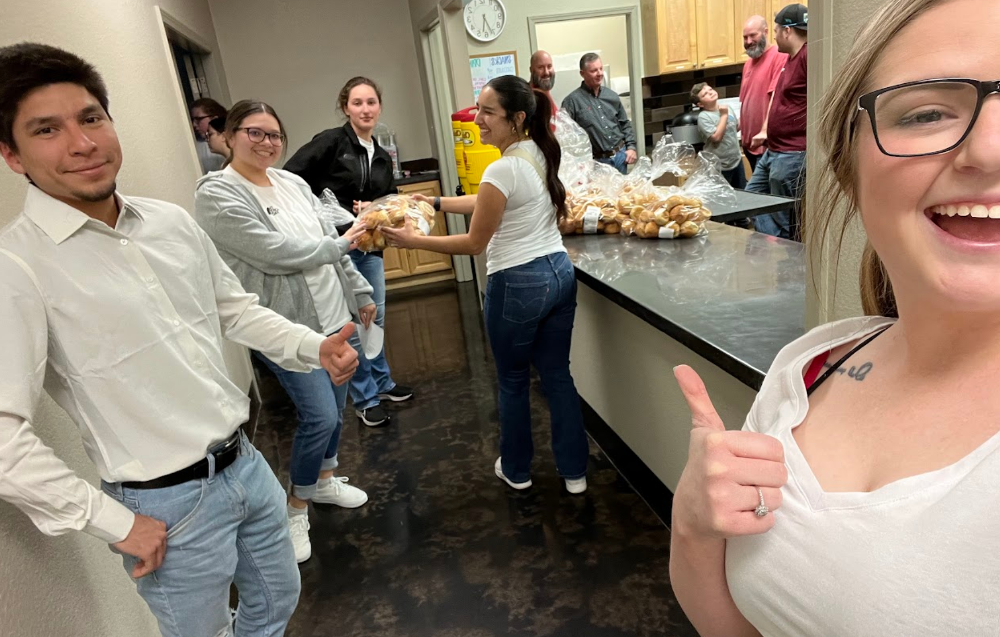
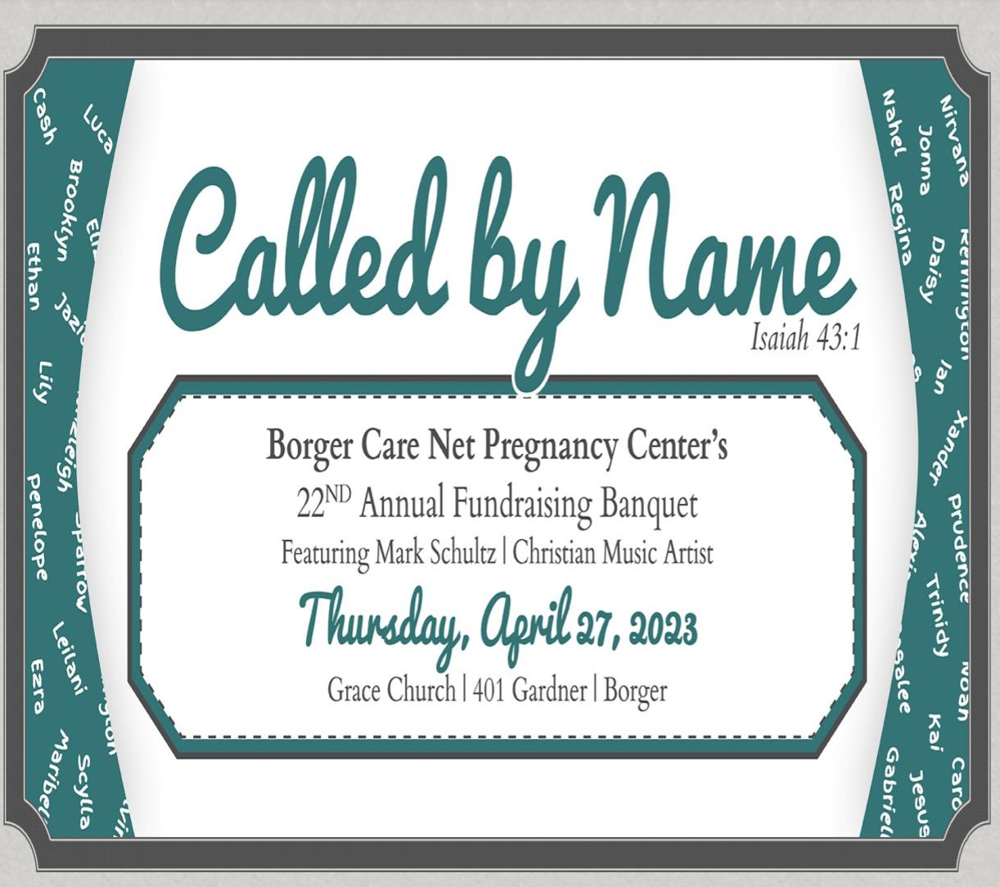

Professional Summary
Computer Information Systems Student at West Texas A&M University with experience in programming, data analysis, and software development.
Technical Skills
Education
Bachelor of Business Administration in Computer Information Systems, West Texas A&M University (Anticipated Fall 2025)
Associate of Science in General Studies, Frank Phillips College, May 2023
New Section
I’m still adding content here. Stay tuned for updates.
New Section
I’m still adding content here. Stay tuned for updates.
Skills
SQL: Experience querying, analyzing, and summarizing large datasets.
Data Analytics & Visualization: Databricks and Power BI for analyzing large datasets, creating dashboards, and producing reports to highlight trends
Programming and Web Development: HTML/CSS (static websites, responsive design, page structure) and C# Fundamentals (variables, loops, functions, and OOP).
Microsoft Office: Experienced in Excel (data analysis, charts), Word (reports), PowerPoint (presentations), and Outlook (email, scheduling).
Achievments
- President's List, WTAMU, Fall 2024
- President's List, WTAMU, Fall 2023
- Outstanding Accomplishment in Biology, Frank Phillips College, 2023
- Phi Theta Kappa Member, January 2023
Volunteer Experience
Server - Borger Care Net Pregnancy Center Fundraiser Banquet
Fellowship Church, Borger, TX (April 2023)
Assisted in distributing food and drinks during the fundraiser.
Helped with cleanup after the event.
 


